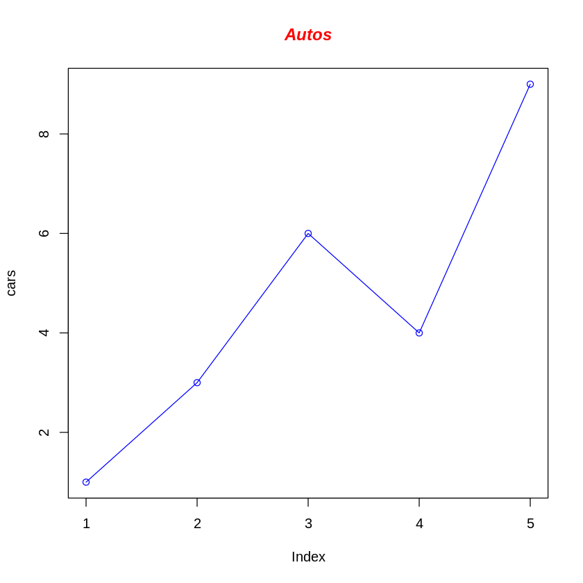
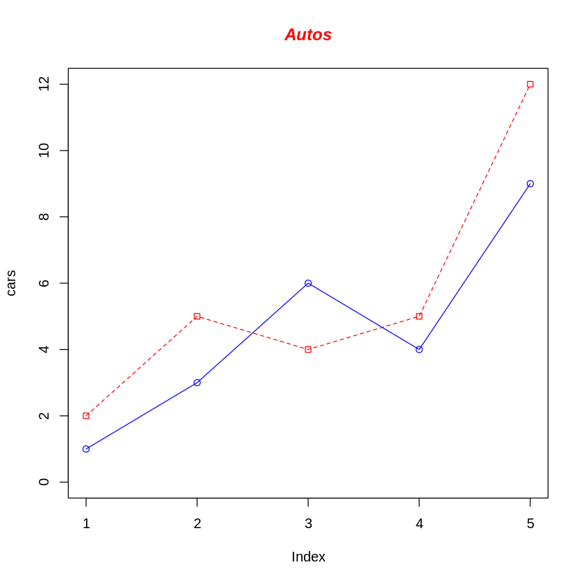
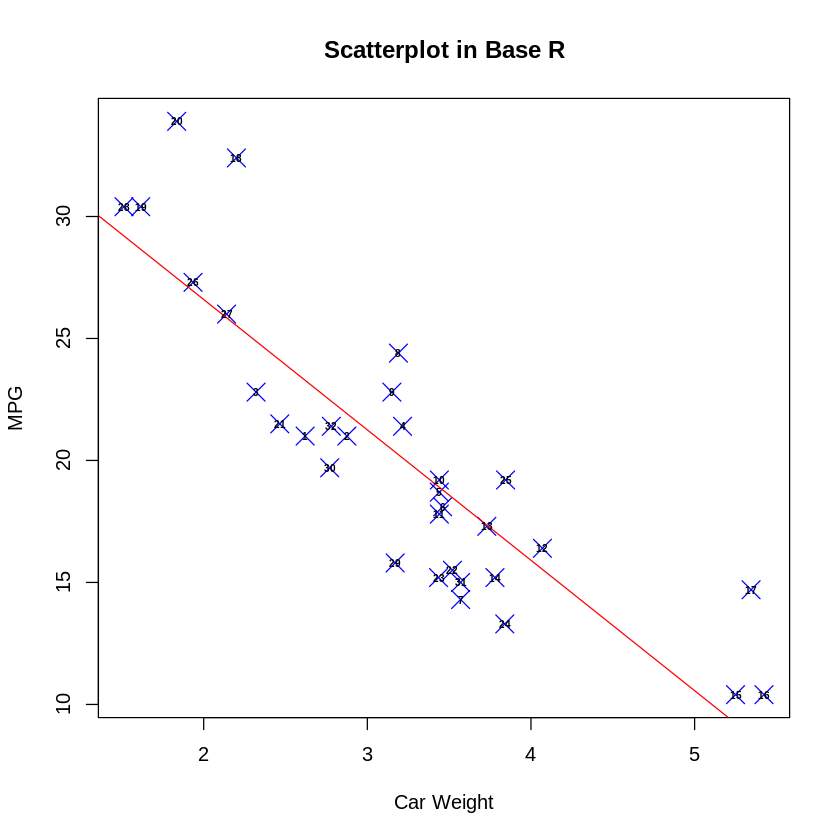
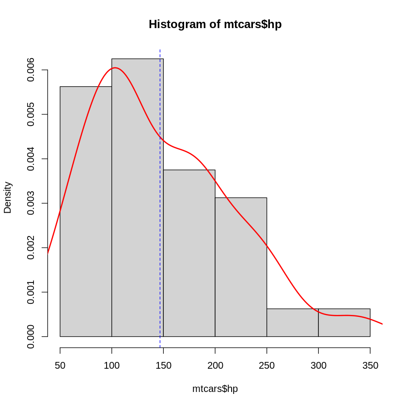
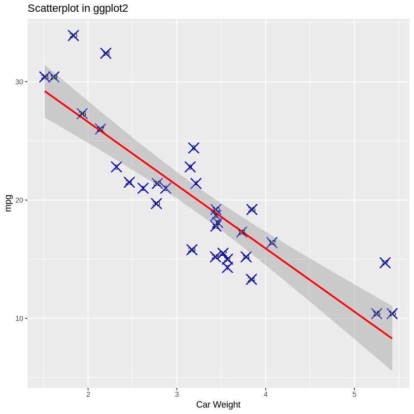
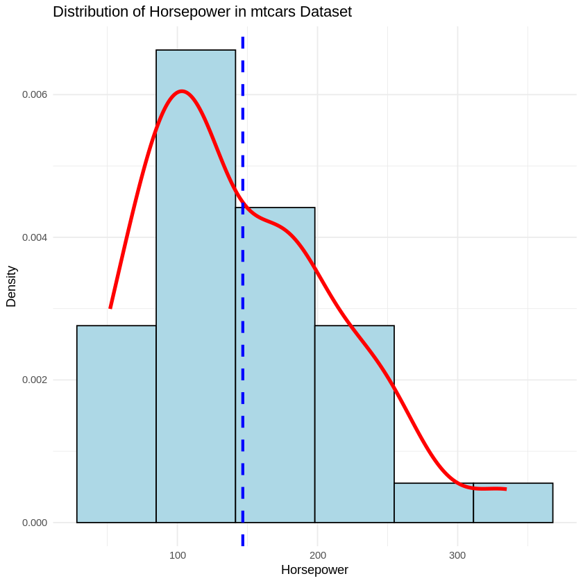

Introduction to R
What is R
R is a language and environment for statistical computing and graphics.
-
Runs on a variaty of operation systerms: Windows, Linux and MacOS
-
Generates publication-ready plots
-
Owns a large open-source community
-
Extends functions as packages
Essetnial concepts for programming languages
Variables
Variable names can have letters, dots and undercores (e.g. gene_name, "csvfile.1" and chr1).
Functions
A function is a structured, reusable segment of code designed to carry out a specific set of operations. It can accept zero or more inputs (parameters) and can produce an output (result).
INPUT --function--> OUTPUT
The way to define a function is:
read_star_file <- function(file_path){
...code goes here...
return(df)
}
The way to use a function in R is:
read_star_file(paths)
Basic data types
# assign a number to variable gene_count
gene1 <- 150
gene2 <- 200
gene1
gene2
150
200
# Examples of character value
gene_name1 <- "KRAS"
gene_name1
'KRAS'
# Examples of character value
"RAS" -> gene_name2
gene_name2
'RAS'
# Examples of character value
gene_name3 <- "KRAS"
gene_name3
'KRAS'
# Logical value
gene1 > gene2
gene1 < gene2
bool_val = gene1 < gene2
bool_val
FALSE
TRUE
TRUE
class(gene1)
class(gene_name)
class()
'numeric'
'character'
Basic data structure
An atomic vector is a collection of multiple values (numeric, character, or logical) stored in a single object. You can create an atomic vector using the c() function.
sample_names <- c("N2_day1_rep1", "N2_day1_rep2", "N2_day1_rep3",
"N2_day7_rep1", "N2_day7_rep2", "N2_day7_rep3")
sample_names
- 'N2_day1_rep1'
- 'N2_day1_rep2'
- 'N2_day1_rep3'
- 'N2_day7_rep1'
- 'N2_day7_rep2'
- 'N2_day7_rep3'
group <- gsub("_rep\\d", "", sample_names)
group
- 'N2_day1'
- 'N2_day1'
- 'N2_day1'
- 'N2_day7'
- 'N2_day7'
- 'N2_day7'
rep <- gsub("N2_day\\d_rep", "", sample_names)
rep
- '1'
- '2'
- '3'
- '1'
- '2'
- '3'
coldata_df <- cbind(group = gsub("_rep\\d", "", sample_names))
coldata_df
| group |
|---|
| N2_day1 |
| N2_day1 |
| N2_day1 |
| N2_day7 |
| N2_day7 |
| N2_day7 |
coldata_df <- cbind(group = gsub("_rep\\d", "", sample_names), rep = gsub("N2_day\\d_rep", "", sample_names))
coldata_df
| group | rep |
|---|---|
| N2_day1 | 1 |
| N2_day1 | 2 |
| N2_day1 | 3 |
| N2_day7 | 1 |
| N2_day7 | 2 |
| N2_day7 | 3 |
rownames(coldata_df)
NULL
rownames(coldata_df) = sample_names
coldata_df
| group | rep | |
|---|---|---|
| N2_day1_rep1 | N2_day1 | 1 |
| N2_day1_rep2 | N2_day1 | 2 |
| N2_day1_rep3 | N2_day1 | 3 |
| N2_day7_rep1 | N2_day7 | 1 |
| N2_day7_rep2 | N2_day7 | 2 |
| N2_day7_rep3 | N2_day7 | 3 |
t(coldata_df)
| N2_day1_rep1 | N2_day1_rep2 | N2_day1_rep3 | N2_day7_rep1 | N2_day7_rep2 | N2_day7_rep3 | |
|---|---|---|---|---|---|---|
| group | N2_day1 | N2_day1 | N2_day1 | N2_day7 | N2_day7 | N2_day7 |
| rep | 1 | 2 | 3 | 1 | 2 | 3 |
is.matrix(coldata_df)
coldata_df <- as.data.frame(coldata_df)
is.data.frame(coldata_df)
TRUE
TRUE
A matrix can contain either character or numeric columns and a dataframe can contain both numeric and character columns.
A list is an ordered collection of objects, which can be any type of R objects (vectors, matrices, data frames, even lists).
count_files = list("sample" = 'N2_day1_rep1.ReadsPerGene.out.tab', "sample2"='N2_day1_rep2.ReadsPerGene.out.tab')
count_files
- $sample
- 'N2_day1_rep1.ReadsPerGene.out.tab'
- $sample2
- 'N2_day1_rep2.ReadsPerGene.out.tab'
gene_count = list("gene1" = 10, "gene2"=20)
lapply(gene_count, function(x){log2(x+1)})
- $gene1
- 3.4594316186373
- $gene2
- 4.39231742277876
log2_transform <- function(x){
log2(x+1)
}
lapply(gene_count, log2_transform)
- $gene1
- 3.4594316186373
- $gene2
- 4.39231742277876
Dealing with text files
getwd()
#setwd()
'/content'
list.files()
- 'N2_day1_rep1.ReadsPerGene.out.tab'
- 'N2_day1_rep2.ReadsPerGene.out.tab'
- 'N2_day1_rep3.ReadsPerGene.out.tab'
- 'N2_day7_rep1.ReadsPerGene.out.tab'
- 'N2_day7_rep2.ReadsPerGene.out.tab'
- 'N2_day7_rep3.ReadsPerGene.out.tab'
- 'sample_data'
file_paths <- list.files(pattern = "*..ReadsPerGene.out.tab")
file_paths
- 'N2_day1_rep1.ReadsPerGene.out.tab'
- 'N2_day1_rep2.ReadsPerGene.out.tab'
- 'N2_day1_rep3.ReadsPerGene.out.tab'
- 'N2_day7_rep1.ReadsPerGene.out.tab'
- 'N2_day7_rep2.ReadsPerGene.out.tab'
- 'N2_day7_rep3.ReadsPerGene.out.tab'
tab_N2_day1_rep1 <- read.table('N2_day1_rep1.ReadsPerGene.out.tab')
head(tab_N2_day1_rep1, 5)
| V1 | V2 | V3 | V4 | |
|---|---|---|---|---|
| <chr> | <int> | <int> | <int> | |
| 1 | N_unmapped | 1332776 | 1332776 | 1332776 |
| 2 | N_multimapping | 1540190 | 1540190 | 1540190 |
| 3 | N_noFeature | 157102 | 19017455 | 18933214 |
| 4 | N_ambiguous | 536422 | 128854 | 120342 |
| 5 | WBGene00000003 | 341 | 161 | 180 |
tab_N2_day1_rep2 <- read.table('N2_day1_rep2.ReadsPerGene.out.tab')
head(tab_N2_day1_rep2,5)
| V1 | V2 | V3 | V4 | |
|---|---|---|---|---|
| <chr> | <int> | <int> | <int> | |
| 1 | N_unmapped | 1400596 | 1400596 | 1400596 |
| 2 | N_multimapping | 1305129 | 1305129 | 1305129 |
| 3 | N_noFeature | 152183 | 15009786 | 14975925 |
| 4 | N_ambiguous | 439830 | 104631 | 98489 |
| 5 | WBGene00000003 | 415 | 198 | 217 |
tab_N2_day1_rep3 <- read.table('N2_day1_rep3.ReadsPerGene.out.tab')
head(tab_N2_day1_rep3,5)
| V1 | V2 | V3 | V4 | |
|---|---|---|---|---|
| <chr> | <int> | <int> | <int> | |
| 1 | N_unmapped | 5887223 | 5887223 | 5887223 |
| 2 | N_multimapping | 1557570 | 1557570 | 1557570 |
| 3 | N_noFeature | 184441 | 17612359 | 17574940 |
| 4 | N_ambiguous | 514559 | 122385 | 115498 |
| 5 | WBGene00000003 | 411 | 175 | 236 |
library(dplyr)
Attaching package: ‘dplyr’
The following objects are masked from ‘package:stats’:
filter, lag
The following objects are masked from ‘package:base’:
intersect, setdiff, setequal, union
tab_N2_day1_rep1 <- tab_N2_day1_rep1 %>% select(V1, V2)
head(tab_N2_day1_rep1, 5)
tab_N2_day1_rep2 <- tab_N2_day1_rep2[, c("V1", "V2")]
head(tab_N2_day1_rep2, 5)
tab_N2_day1_rep3 <- tab_N2_day1_rep3[, c("V1", "V2")]
head(tab_N2_day1_rep3, 5)
| V1 | V2 | |
|---|---|---|
| <chr> | <int> | |
| 1 | N_unmapped | 1332776 |
| 2 | N_multimapping | 1540190 |
| 3 | N_noFeature | 157102 |
| 4 | N_ambiguous | 536422 |
| 5 | WBGene00000003 | 341 |
| V1 | V2 | |
|---|---|---|
| <chr> | <int> | |
| 1 | N_unmapped | 1400596 |
| 2 | N_multimapping | 1305129 |
| 3 | N_noFeature | 152183 |
| 4 | N_ambiguous | 439830 |
| 5 | WBGene00000003 | 415 |
| V1 | V2 | |
|---|---|---|
| <chr> | <int> | |
| 1 | N_unmapped | 5887223 |
| 2 | N_multimapping | 1557570 |
| 3 | N_noFeature | 184441 |
| 4 | N_ambiguous | 514559 |
| 5 | WBGene00000003 | 411 |
df_merged <- merge(tab_N2_day1_rep1, tab_N2_day1_rep2, by = "V1")
head(df_merged)
df_merged <- merge(df_merged, tab_N2_day1_rep3, by = "V1")
head(df_merged)
| V1 | V2.x | V2.y | |
|---|---|---|---|
| <chr> | <int> | <int> | |
| 1 | N_ambiguous | 536422 | 439830 |
| 2 | N_multimapping | 1540190 | 1305129 |
| 3 | N_noFeature | 157102 | 152183 |
| 4 | N_unmapped | 1332776 | 1400596 |
| 5 | WBGene00000001 | 3227 | 2168 |
| 6 | WBGene00000002 | 270 | 203 |
| V1 | V2.x | V2.y | V2 | |
|---|---|---|---|---|
| <chr> | <int> | <int> | <int> | |
| 1 | N_ambiguous | 536422 | 439830 | 514559 |
| 2 | N_multimapping | 1540190 | 1305129 | 1557570 |
| 3 | N_noFeature | 157102 | 152183 | 184441 |
| 4 | N_unmapped | 1332776 | 1400596 | 5887223 |
| 5 | WBGene00000001 | 3227 | 2168 | 2589 |
| 6 | WBGene00000002 | 270 | 203 | 266 |
The Reduce() function in R allows us to apply a function repeatedly to a list of elements. Here, we are applying merge() iteratively to a list of data frames.
df_mer_red <- Reduce(function(x, y) merge(x, y, by = "V1"),
list("tab_N2_day1_rep1" = tab_N2_day1_rep1,
"tab_N2_day1_rep2" = tab_N2_day1_rep2,
"tab_N2_day1_rep3" = tab_N2_day1_rep3))
head(df_mer_red, 5)
| V1 | V2.x | V2.y | V2 | |
|---|---|---|---|---|
| <chr> | <int> | <int> | <int> | |
| 1 | N_ambiguous | 536422 | 439830 | 514559 |
| 2 | N_multimapping | 1540190 | 1305129 | 1557570 |
| 3 | N_noFeature | 157102 | 152183 | 184441 |
| 4 | N_unmapped | 1332776 | 1400596 | 5887223 |
| 5 | WBGene00000001 | 3227 | 2168 | 2589 |
Producing Graphs with R
Producing Graphs using basic
Line charts
# Define the cars vector with 5 values
cars <- c(1, 3, 6, 4, 9)
# Graph the cars vector with all defaults
plot(cars)
Let's add a title, a line to connect the points, and some color:
# Define the cars vector with 5 values
cars <- c(1, 3, 6, 4, 9)
# Graph cars using blue points overlayed by a line
plot(cars, type="o", col="blue")
# Create a title with a red, bold/italic font
title(main="Autos", col.main="red", font.main=4)

# Define 2 vectors
cars <- c(1, 3, 6, 4, 9)
trucks <- c(2, 5, 4, 5, 12)
# Graph cars using a y axis that ranges from 0 to 12
plot(cars, type="o", col="blue", ylim=c(0,12))
# Graph trucks with red dashed line and square points
lines(trucks, type="o", pch=22, lty=2, col="red")
# Create a title with a red, bold/italic font
title(main="Autos", col.main="red", font.main=4)

csv_url <- "https://gist.githubusercontent.com/seankross/a412dfbd88b3db70b74b/raw/5f23f993cd87c283ce766e7ac6b329ee7cc2e1d1/mtcars.csv"
mtcars <- read.csv(csv_url)
mtcars
| model | mpg | cyl | disp | hp | drat | wt | qsec | vs | am | gear | carb |
|---|---|---|---|---|---|---|---|---|---|---|---|
| <chr> | <dbl> | <int> | <dbl> | <int> | <dbl> | <dbl> | <dbl> | <int> | <int> | <int> | <int> |
| Mazda RX4 | 21.0 | 6 | 160.0 | 110 | 3.90 | 2.620 | 16.46 | 0 | 1 | 4 | 4 |
| Mazda RX4 Wag | 21.0 | 6 | 160.0 | 110 | 3.90 | 2.875 | 17.02 | 0 | 1 | 4 | 4 |
| Datsun 710 | 22.8 | 4 | 108.0 | 93 | 3.85 | 2.320 | 18.61 | 1 | 1 | 4 | 1 |
| Hornet 4 Drive | 21.4 | 6 | 258.0 | 110 | 3.08 | 3.215 | 19.44 | 1 | 0 | 3 | 1 |
| Hornet Sportabout | 18.7 | 8 | 360.0 | 175 | 3.15 | 3.440 | 17.02 | 0 | 0 | 3 | 2 |
| Valiant | 18.1 | 6 | 225.0 | 105 | 2.76 | 3.460 | 20.22 | 1 | 0 | 3 | 1 |
| Duster 360 | 14.3 | 8 | 360.0 | 245 | 3.21 | 3.570 | 15.84 | 0 | 0 | 3 | 4 |
| Merc 240D | 24.4 | 4 | 146.7 | 62 | 3.69 | 3.190 | 20.00 | 1 | 0 | 4 | 2 |
| Merc 230 | 22.8 | 4 | 140.8 | 95 | 3.92 | 3.150 | 22.90 | 1 | 0 | 4 | 2 |
| Merc 280 | 19.2 | 6 | 167.6 | 123 | 3.92 | 3.440 | 18.30 | 1 | 0 | 4 | 4 |
| Merc 280C | 17.8 | 6 | 167.6 | 123 | 3.92 | 3.440 | 18.90 | 1 | 0 | 4 | 4 |
| Merc 450SE | 16.4 | 8 | 275.8 | 180 | 3.07 | 4.070 | 17.40 | 0 | 0 | 3 | 3 |
| Merc 450SL | 17.3 | 8 | 275.8 | 180 | 3.07 | 3.730 | 17.60 | 0 | 0 | 3 | 3 |
| Merc 450SLC | 15.2 | 8 | 275.8 | 180 | 3.07 | 3.780 | 18.00 | 0 | 0 | 3 | 3 |
| Cadillac Fleetwood | 10.4 | 8 | 472.0 | 205 | 2.93 | 5.250 | 17.98 | 0 | 0 | 3 | 4 |
| Lincoln Continental | 10.4 | 8 | 460.0 | 215 | 3.00 | 5.424 | 17.82 | 0 | 0 | 3 | 4 |
| Chrysler Imperial | 14.7 | 8 | 440.0 | 230 | 3.23 | 5.345 | 17.42 | 0 | 0 | 3 | 4 |
| Fiat 128 | 32.4 | 4 | 78.7 | 66 | 4.08 | 2.200 | 19.47 | 1 | 1 | 4 | 1 |
| Honda Civic | 30.4 | 4 | 75.7 | 52 | 4.93 | 1.615 | 18.52 | 1 | 1 | 4 | 2 |
| Toyota Corolla | 33.9 | 4 | 71.1 | 65 | 4.22 | 1.835 | 19.90 | 1 | 1 | 4 | 1 |
| Toyota Corona | 21.5 | 4 | 120.1 | 97 | 3.70 | 2.465 | 20.01 | 1 | 0 | 3 | 1 |
| Dodge Challenger | 15.5 | 8 | 318.0 | 150 | 2.76 | 3.520 | 16.87 | 0 | 0 | 3 | 2 |
| AMC Javelin | 15.2 | 8 | 304.0 | 150 | 3.15 | 3.435 | 17.30 | 0 | 0 | 3 | 2 |
| Camaro Z28 | 13.3 | 8 | 350.0 | 245 | 3.73 | 3.840 | 15.41 | 0 | 0 | 3 | 4 |
| Pontiac Firebird | 19.2 | 8 | 400.0 | 175 | 3.08 | 3.845 | 17.05 | 0 | 0 | 3 | 2 |
| Fiat X1-9 | 27.3 | 4 | 79.0 | 66 | 4.08 | 1.935 | 18.90 | 1 | 1 | 4 | 1 |
| Porsche 914-2 | 26.0 | 4 | 120.3 | 91 | 4.43 | 2.140 | 16.70 | 0 | 1 | 5 | 2 |
| Lotus Europa | 30.4 | 4 | 95.1 | 113 | 3.77 | 1.513 | 16.90 | 1 | 1 | 5 | 2 |
| Ford Pantera L | 15.8 | 8 | 351.0 | 264 | 4.22 | 3.170 | 14.50 | 0 | 1 | 5 | 4 |
| Ferrari Dino | 19.7 | 6 | 145.0 | 175 | 3.62 | 2.770 | 15.50 | 0 | 1 | 5 | 6 |
| Maserati Bora | 15.0 | 8 | 301.0 | 335 | 3.54 | 3.570 | 14.60 | 0 | 1 | 5 | 8 |
| Volvo 142E | 21.4 | 4 | 121.0 | 109 | 4.11 | 2.780 | 18.60 | 1 | 1 | 4 | 2 |
plot(mtcars$wt,mtcars$mpg, main="Scatterplot in Base R",
xlab="Car Weight", ylab="MPG",
pch=4, col = "blue", lwd=1, cex = 2)
abline(lm(mtcars$mpg~mtcars$wt), col="red")
text(mtcars$wt, mtcars$mpg, labels=rownames(mtcars), cex=0.5, font=2)

hist(mtcars$hp,
prob = TRUE)
lines(density(mtcars$hp), # density plot
lwd = 2, # thickness of line
col = "red")
abline(v=mean(mtcars$hp),
lty="dashed",
col="blue")

Probability Density: It tells you how the data is distributed over different ranges (or bins) of values. The height of each bar shows how densely the data is packed in that range of horsepower values.
Producing graphs using ggplot2
library(ggplot2)
ggplot(mtcars, aes(x=wt, y=mpg)) +
geom_point(size=5, shape=4, color="blue", stroke=1) +
geom_smooth(method=lm, color="red") +
ggtitle("Scatterplot in ggplot2") +
xlab("Car Weight") + # for the x axis label
geom_text(label=rownames(mtcars),cex=3)
[1m[22m`geom_smooth()` using formula = 'y ~ x'

ggplot(mtcars, aes(x = hp)) +
geom_histogram(aes(y = ..density..),
bins = 6, # You can adjust the number of bins
fill = "lightblue",
color = "black") + # Histogram with probability density
geom_density(color = "red", size = 1.5) + # Add the density plot
geom_vline(aes(xintercept = mean(hp)),
linetype = "dashed",
color = "blue",
size = 1.2) + # Add dashed blue vertical line at the mean
labs(title = "Distribution of Horsepower in mtcars Dataset",
x = "Horsepower",
y = "Density") + # Add axis labels and title
theme_minimal() # Use a clean theme for the plot

Reference
https://sites.harding.edu/fmccown/R/
https://jtr13.github.io/cc21fall2/base-r-vs.-ggplot2-visualization.html#base-r-vs.-ggplot2-visualization